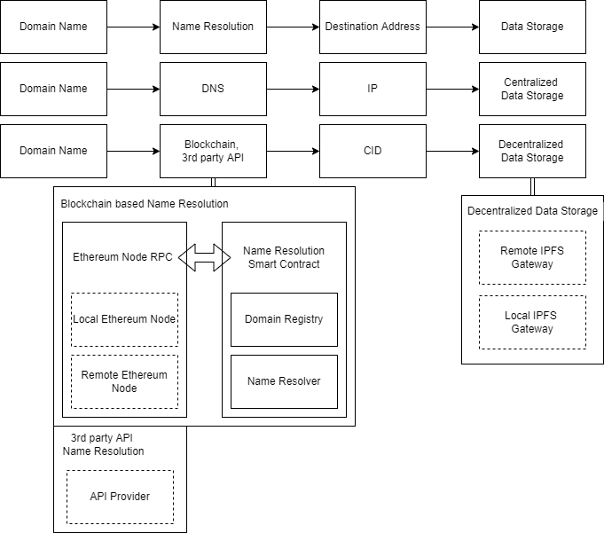
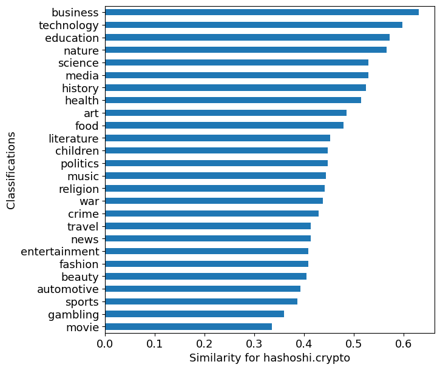
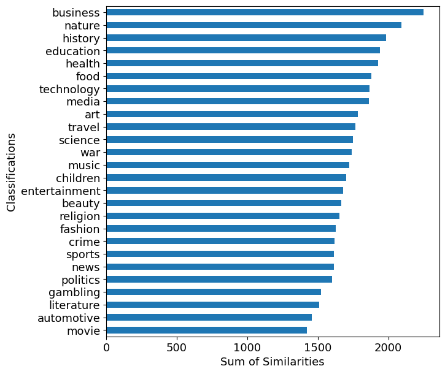

Unstoppable Domains
Table of Contents
1 Introduction
Building a new name delimitation, we call a website web2 if a single entity hosts the website's data. If the website's data distributes in a decentralized storage system (e.g., IPFS), we call such a website web3. We notice that some websites are live in both web2 and web3.

Figure 1: Web3 Overview
Figure 2: A running example route in Web3
We can catalog unstoppable domains in four ways.
- No Information: Onwer bought the domain name from UnstoppableDomains Inc., but yet register any information on Ethereum.
- Crypto Address Shortcut: Owner only registers cryptocurrency addresses.
- Social Media: Owner resigters social media usernames.
- Web Link: Owner resigters web links (e.g., traditional web URL forwading, DNS record and ipfs CID1).
2 Methods
domain_name = "myetherwallet.crypto"
from web3 import Web3 import json import sys sys.path.append('../src') from Utils import namehash domainname = "myetherwallet.crypto" gateway_rpc = "https://mainnet.infura.io/v3/ba8fdd8bbb6d44529e0ac13790731051" w3 = Web3(Web3.HTTPProvider(gateway_rpc)) ud_address = "0xD1E5b0FF1287aA9f9A268759062E4Ab08b9Dacbe" ud_abi = json.load(open("../data/ud.abi")) ud = w3.eth.contract(address=ud_address, abi=ud_abi) tokenURI = ud.functions.tokenURI(int(namehash(domainname).hex(),16)).call() print(f"{tokenURI=}")
tokenURI='https://metadata.unstoppabledomains.com/metadata/myetherwallet.crypto'
import requests import json response = requests.request("GET", tokenURI) r = response.json()["properties"]["records"] print("record:") print(json.dumps(r, indent=2))
record:
{
"ipfs.html.value": "QmVboz5mZcN8BELbB5FK7gwGFLT4KpqMdayofvVw5fFAsu",
"crypto.ETH.address": "0xDECAF9CD2367cdbb726E904cD6397eDFcAe6068D",
"social.twitter.username": "myetherwallet",
"validation.social.twitter.username": "0xd1b923b5f169d7cc7c029dd9dfe4c621ed17e650950a2bd4d597ef5fa4bf483675cd79297c73ed5b130edbf335aa2e2395ea820c4c604418fc783ce549fb3d541b"
}
3 Results
blocknumber= 14637420
3.1 Domain Name with Empty Records
import pandas as pd df = pd.read_csv("../data/URIs.csv", names=["tokenId", "URI", "records"]) norecords = df[df['records'] == '{}'] print(f"number of domain names with empty records: {norecords.shape[0]}") print(f"percentage of domain names with empty records: {norecords.shape[0] / df.shape[0]:.3}")
number of domain name with at least one crypto address: 76296 percentage of domain name with at least one crypto address: 0.247
3.2 Crypto Address Shortcut
import json keys = json.load(open("../data/supported-keys.json", "r")) crypto = set(filter(lambda x:x.split(".")[0] =="crypto", keys["keys"].keys())) def remove_keys(jsonstring, remaining_keys): data = eval(jsonstring) keys = set(remaining_keys) & set(data.keys()) return {k:data[k] for k in keys} df_crypto = df["records"].apply(remove_keys, remaining_keys=crypto) df_crypto = df[df_crypto != {}] print(f"number of domain name with at least one crypto address: {df_crypto.shape[0]}") print(f"percentage of domain name with at least one crypto address: {df_crypto.shape[0]/ df.shape[0]:.3}")
number of domain names with empty records: 186173 percentage of domain names with empty records: 0.604
3.3 Social Media
social = set(filter(lambda x:x.split(".")[0] in ["social","whois", "guhhndb"], keys["keys"].keys())) df_social = df["records"].apply(remove_keys, remaining_keys=social) df_social = df[df_social != {}] print(f"number of domain name with at least one web link: {df_social.shape[0]}") print(f"percentage of domain name with at least one web link: {df_social.shape[0]/df.shape[0]:.3}")
number of domain name with at least one crypto address: 76296 percentage of domain name with at least one crypto address: 0.247
3.4 Web Link
weblinks = set(filter(lambda x:x.split(".")[0] in ["ipfs", "dweb", "browser", "dns", "forwarding"], keys["keys"].keys())) df_weblinks = df["records"].apply(remove_keys, remaining_keys=weblinks) df_weblinks = df[df_weblinks != {}] print(f"number of domain name with at least one web link: {df_weblinks.shape[0]}") print(f"percentage of domain name with at least one web link: {df_weblinks.shape[0]/df.shape[0]:.3}")
number of domain name with at least one web link: 58371 percentage of domain name with at least one web link: 0.189
3.4.1 Valid IPFS Link
A local or remote gateway is necessary to access data in the decentralized storage system.
topics = ["automotive", "travel", "science", "technology", "nature", "sports", "business", "beauty", "fashion", "music", "art", "movie", "entertainment", "media", "children", "health", "gambling", "religion", "education", "politics", "history", "war", "news", "food", "literature", "crime"] df_valid = pd.read_csv("../data/similarity.csv", names=["domain"]+topics+["isTemplate"]) print(f"number of valid IPFS link: {df_valid.shape[0]}") print(f"percentage of valid IPFS link over all web links: {df_valid.shape[0]/df_weblinks.shape[0]:.3}") df_not_empty = df_valid[(df_valid[topics] != 0).any(axis=1)].reset_index(drop=True) result = df_not_empty[df_not_empty["isTemplate"] == False].drop_duplicates() print(f"number of non-empty or non-template website: {result.shape[0]}") print(f"percentage of non-empty or non-template website over all web links: {result.shape[0]/df_weblinks.shape[0]:.3}")
number of valid IPFS link: 32185 percentage of valid IPFS link over all web links: 0.92 number of non-empty or non-template website: 4902 percentage of non-empty or non-template website over all web links: 0.14
3.4.2 Turnaround Time Benchmark
- TODO how to deal with timeout records?
from tabulate import tabulate import pandas as pd import numpy as np df = pd.read_csv("../data/elapsed/all.csv").replace(to_replace=-1, value=np.nan) sat = df.describe()
Table 1: Turnaround Time for Different Routes remote name resolution local name resolution remote rpc local name resolution local rpc remote ipfs gateway local ipfs gateway count 4881 4863 4863 4736 4710 mean 0.114883 0.0539154 0.0247745 0.74634 0.588787 std 0.0420121 0.0254008 0.0147771 1.04107 0.562624 min 0.0640597 0.0394466 0.0132668 0.0738649 0.0101256 25% 0.0850315 0.0472939 0.0163925 0.445093 0.352723 50% 0.123342 0.0489628 0.022778 0.520961 0.465822 75% 0.132211 0.0513262 0.0264394 0.738641 0.669094 max 1.57274 0.620818 0.441556 10.0168 9.867 As depicted in Fig.1, users have multiple routes to reach a destination website. The mean turnaround time for the running example route,
domain name->remote node RPC->remote IPFS gateway->frontpage, is 0.0539154 + 0.74634 = 0.8002554 seconds.
3.4.3 Web3 Classification Ranking
from matplotlib import pyplot as plt plt.rcParams.update({'font.size': 13}) plt.rcParams['text.usetex'] = False plt.tight_layout() fig = plt.figure() fname = './similarity.png' sim = result[topics].sum().sort_values().plot.barh(figsize=(7, 7)) sim.set_xlabel("Sum of Similarities") sim.set_ylabel("Classifications") sim.figure.savefig(fname, dpi=fig.dpi,bbox_inches='tight') fig = plt.figure() fname = "hashoshi.png" hashoshi = result[result["domain"] == "hashoshi.crypto"] hashoshi = hashoshi[topics].iloc[0].sort_values().plot.barh(figsize=(7, 7)) hashoshi.set_xlabel("Similarity for hashoshi.crypto") hashoshi.set_ylabel("Classifications") hashoshi.figure.savefig(fname,dpi=fig.dpi,bbox_inches='tight')
|  |  |